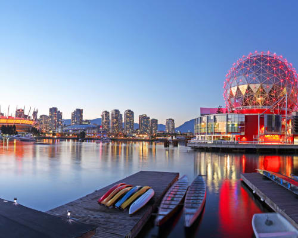
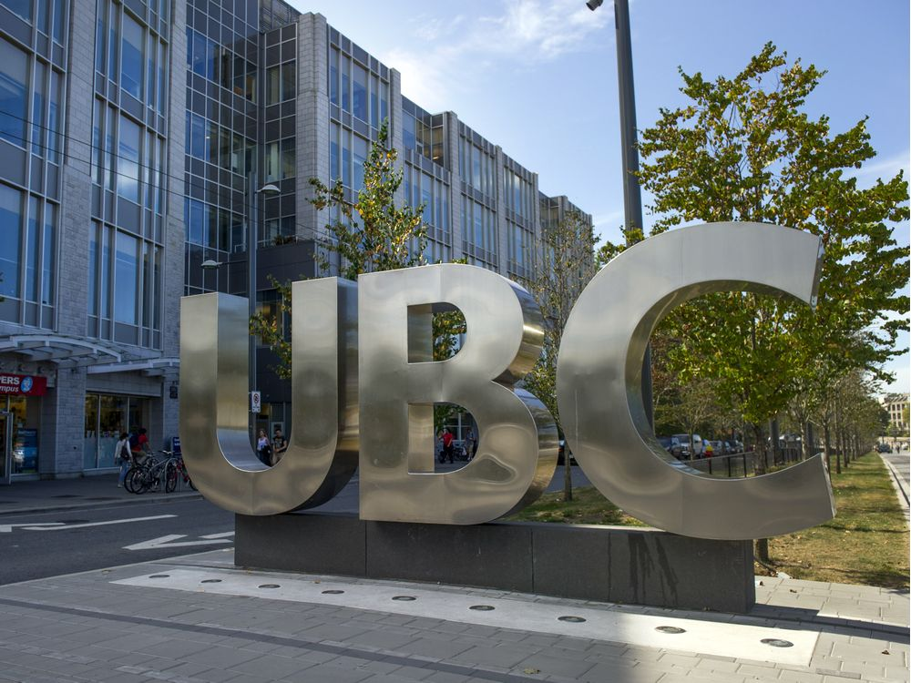

 David Suzuki was born in March 24th, 1936 in Vancouver, British Columbia. David's family consisted of five others, his three siblings, and two parents. Unfortunately, after the pearl harbor attack in 1941, the Canadian government sent the Suzuki family to a village in southeastern British Columbia called Slocan, where david would face internment.
 After the war, David's family decided to move east to Ontario. The Suzuki's first lived in Leamington, but later moved to London. Suzuki spent his years in Ontario attending elementary and secondary school, where he was deeply passionate about sciences and nature. Suzuki shows gratitude to his father for interesting him in the natural world, and the wildlife.
After the war, David's family decided to move east to Ontario. The Suzuki's first lived in Leamington, but later moved to London. Suzuki spent his years in Ontario attending elementary and secondary school, where he was deeply passionate about sciences and nature. Suzuki shows gratitude to his father for interesting him in the natural world, and the wildlife.
 In 1958, Suzuki graduated from Amherst college with a Bachelors degree in arts. He also recieved a Ph.D in zoology from the University of Chicago in 1961. After finishing his studies, he worked at various laboratories across the U.S and Canada. David Suzuki is most notable for working almost 40 years in the University of British Columbia's genetics department as a professor.